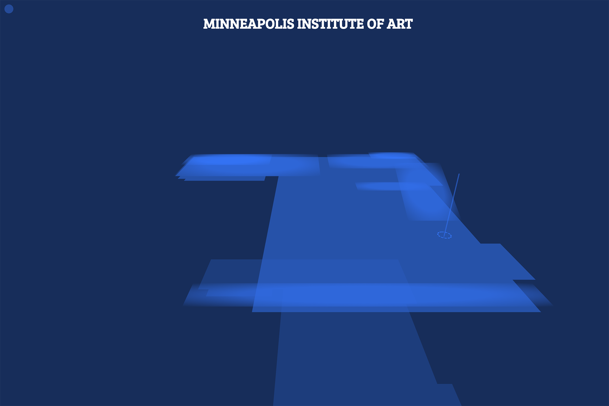
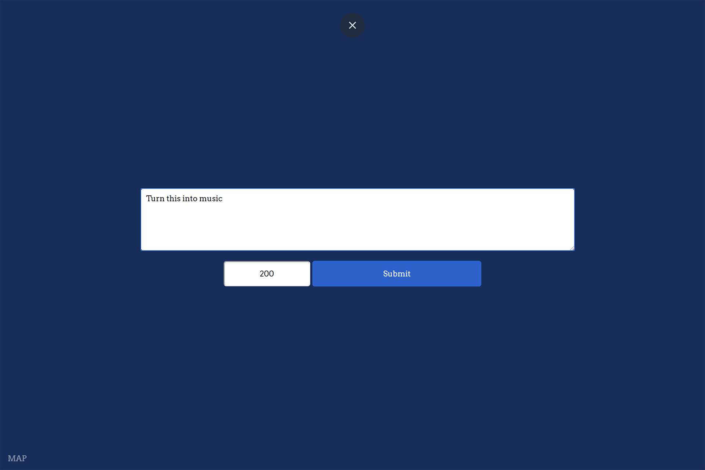
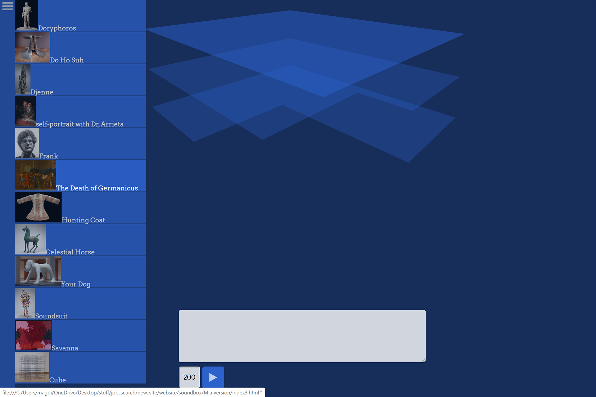
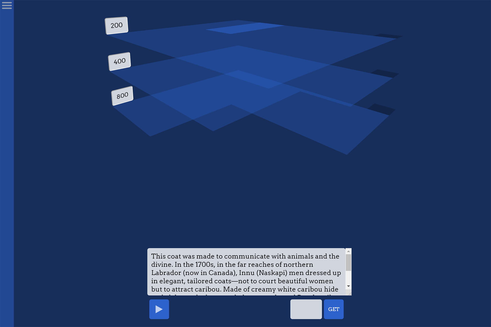
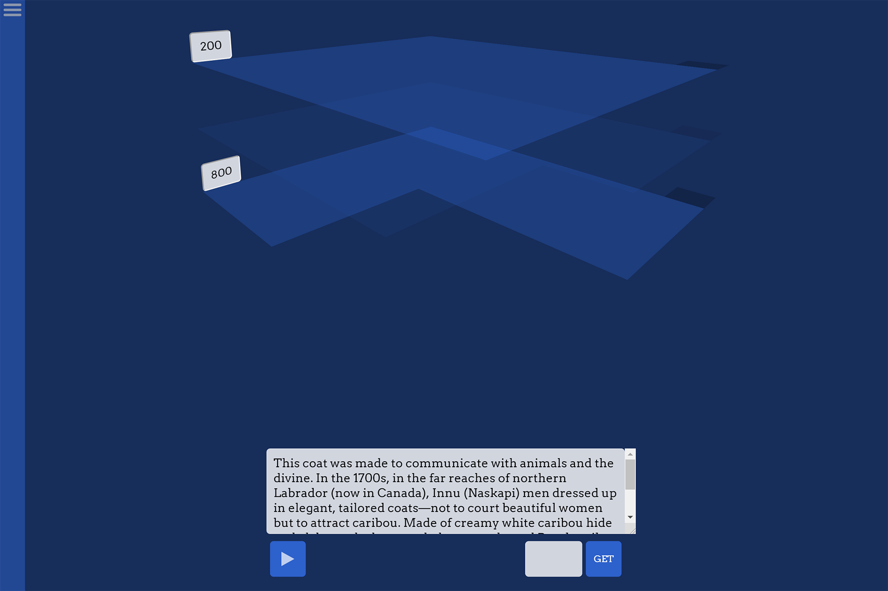

Soundbox - 2017
Music Production Web Application


Soundbox is a web app I programmed in JavaScript.
It transcribes text into sound either directly from the keyboard, or through three layers of text playing simultaneously.
I don't own the sounds, but I added the functionality to upload your own audio for each key.
Soundbox sadly doesn't work (at least as expected) in mobile browsers, since they require explicit user input for each audio to play. However, it works on all modern browsers.
Ideation & Processs
Soundbox originated in a class centered around the Minneapolis Institute of Art. Initially, it started as a rough recreation of the Museum's floor plans using CSS3 3D features.
I later decided to use these geometries to visualize sound and rhythm.
Eventually I combined the two approaches. I loaded the didactic description of several specific pieces from the museum's API and used Soundbox to turn those didactics into beats.
  While I still have the MIA version of the project, I decided in the end that I wanted to maintain the versatility of Soundbox by keeping it as an open-ended web application with no preloaded texts.